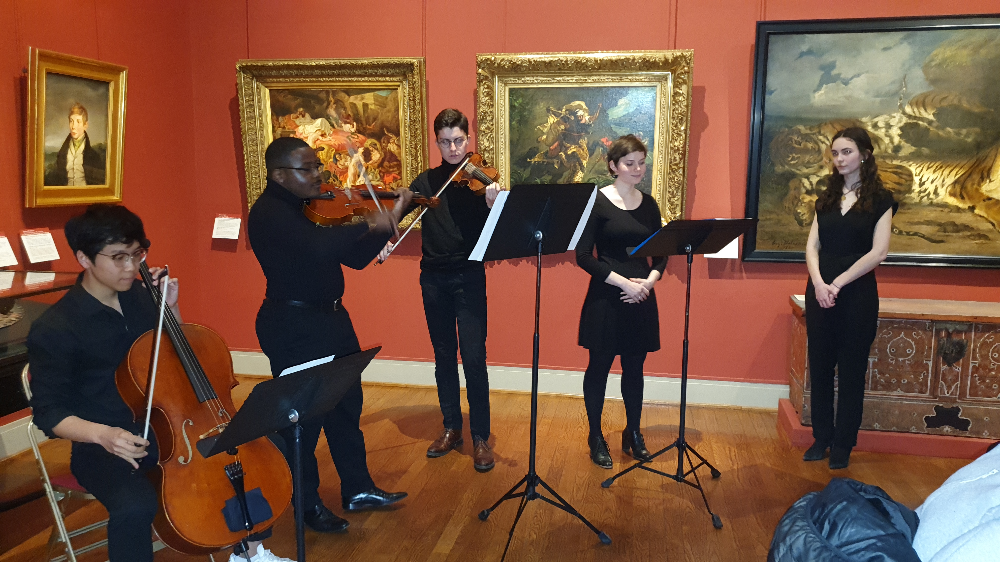

Qu'est-ce que l'OSE
Créé en 2013 par le Bureau des Arts de l'ESSEC, et parrainé par le pianiste virtuose François Weigel pour son lancement, l'OSE se développe en abordant un répertoire de plus en plus large (classique, jazz, tango, musique de film...). Aujourd'hui, succédant à Antonin Rey et Antonin Tardy, c'est Florent des Boscs qui dirige l'ensemble. Ses maîtres mots ? Ouverture, innovation et surtout passion musicale !
Découvrir

Le Choeur

L'Orchestre

La Musique de Chambre